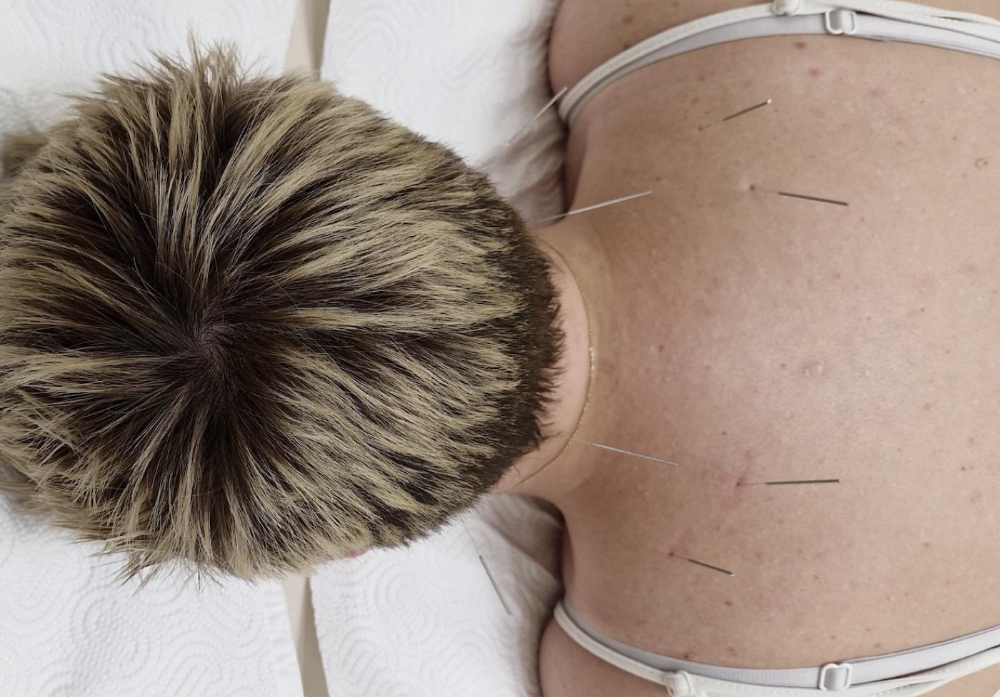
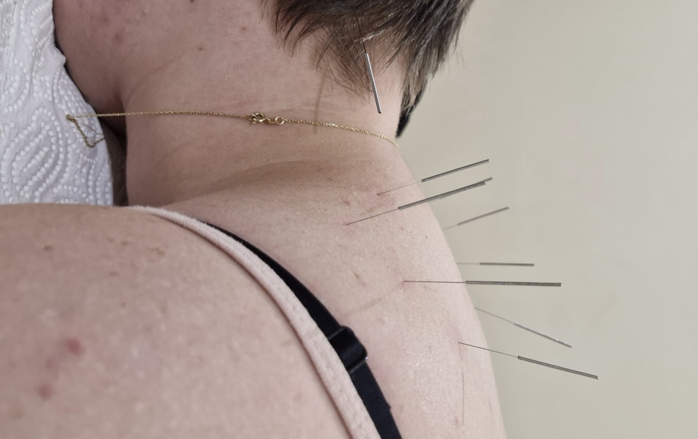

Akupunktura — rešenje kada lekovi nisu dovoljni
Bol u krstima koji se vraća, ukočen vrat od posla za kompjuterom, glavobolje koje znate napamet, nemir koji vas drži budnim do tri ujutru — ako ste već probali tablete, masaže i fizikalnu terapiju, a tegobe se i dalje vraćaju, akupunktura je pristup koji vredi razmotriti. Veoma tanke, sterilne iglice se postavljaju u pažljivo izabrane tačke na telu; telo na to reaguje smirivanjem mišića, popuštanjem napetosti i smanjenjem boli — bez lekova i bez perioda oporavka.

Kako izgleda tretman
Kratak razgovor i pregled
Pre prve sesije pričamo o vašim tegobama, lekovima koje pijete i ranijim nalazima — na osnovu toga biramo tačke i protokol baš za vas.
Postavljanje iglica
Ležite udobno, mi postavljamo veoma tanke iglice (mnogo tanje nego što zamišljate — često ih jedva osetite) u izabrane tačke. Kratak ubod, pa najčešće ništa ili blag osećaj topline ili težine („De Qi").
Vi se odmarate
Iglice ostaju 20–30 minuta dok vi mirno ležite. Većina ljudi se opusti do te mere da zadrema. Posle vađenja iglica možete odmah da vozite i nastavite dan normalno.
Najbolje indikacije
Stanja kod kojih akupunktura najčešće donosi olakšanje — sama ili kao dopuna fizikalnoj terapiji i lekovima koje vam je preporučio lekar.
Bol i mišićna napetost
- Hroničan bol u krstima koji se stalno vraća
- Bol u vratu i ramenima, „ukočen vrat" od sedenja
- Bol u kolenu (rana osteoartroza)
- Teniski i golferski lakat (epikondilitis)
- Bol iz trigger tačaka (čvorovi u mišiću) i tvrdokorni „čvorovi"
- Išijas — bol koji se širi niz nogu (uz potvrdu lekara)
- Bol u krstima u trudnoći (uz saglasnost ginekologa)
- Rehabilitacija posle paralize lica (Bellova pareza)
Stres, glavobolje i ostalo
- Tenzione glavobolje (od napetosti i stresa)
- Migrene — preventivni kurs između napada
- Nesanica i otežano uspavljivanje
- Stres, anksioznost, unutrašnji nemir
- Bolni ili neuredni menstrualni ciklusi (dismenoreja)
- Valunzi i tegobe u perimenopauzi
- Mučnina (posle hemioterapije, u trudnoći — uz oprez)
- Tinitus (zujanje u uhu) — kod izabranih slučajeva
- Alergijski rinitis i sezonske alergije
Koliko traje i kako se planira
Polazni okvir — sve podešavamo prema vašoj dijagnozi, toleranciji i tome kako reagujete na prve sesije.
- Trajanje sesije
- 30–45 minuta (odmarate sa iglicama)
- Vreme sa iglicama
- ~20–30 minuta
- Frekvencija
- 1–2 puta nedeljno
- Tipičan kurs
- 6–10 sesija
- Procena efekta
- na sredini kursa
- Elektroakupunktura
- po potrebi, kod određenih indikacija

Šta da očekujete
Pre prve sesije sledi kratak razgovor o simptomima, lekovima i ranijim nalazima. Smestićete se udobno, najčešće ležeći. Iglice koje koristimo su izuzetno tanke — daleko tanje nego igle za injekcije — i većina ljudi pri ubodu oseti samo kratak „bockaj", a posle toga ništa ili blagu toplinu i osećaj težine oko tačke (to je tzv. „De Qi"). Iglice ostaju oko 20–30 minuta dok vi mirno ležite; kod nekih sesija dodajemo i elektroakupunkturu (slab strujni impuls kroz iglu). Većina ljudi se tokom i posle tretmana oseća prijatno opušteno, često pomalo pospano. Nema lekova, nema perioda oporavka — možete sami da odvezete kući. Olakšanje neki osete već posle 1–2 sesije, ali pravi efekat se gradi kroz ceo kurs.
Kada akupunktura nije za vas
Molimo vas da nam unapred kažete ako: imate poremećaj zgrušavanja krvi, pijete antikoagulantnu terapiju (npr. varfarin ili novije antikoagulanse — to dogovaramo sa vašim lekarom), imate izraženu fobiju od igala, ste trudni (određene tačke izbegavamo — školovani smo za to), imate teško oslabljen imuni sistem, aktivnu infekciju ili oboljenje kože na mestu uboda, nestabilno srčano stanje ili ste pod uticajem alkohola/droga. Pre prve sesije postavljamo nekoliko kratkih pitanja — bezbednost je uvek na prvom mestu.